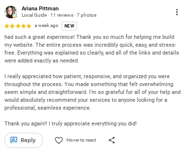
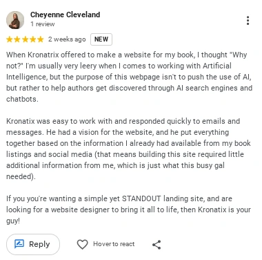

Read the feedback, then open the live work and judge the result for yourself.
What clients said.
Feedback from authors who have worked with KRONATRIX.

Amazing!! beautiful!! KRONATRIX.AI is absolutely amazing, the man is hardworking but as well as he is also kind, my experience with him was absolutely great. Not only is he great at making websites but he is also a person with good humour. I would surely recommend you to visit him once and support his work.

had such a great experience! Thank you so much for helping me build my website. The entire process was incredibly quick, easy, and stress-free. Everything was explained so clearly, and all of the links and details were added exactly as needed. I really appreciated how patient, responsive, and organized you were throughout the process. You made something that felt overwhelming seem simple and straightforward. I’m so grateful for all of your help and would absolutely recommend your services to anyone looking for a professional, seamless experience. Thank you again!! I truly appreciate everything you did!

When Kronatrix offered to make a website for my book, I thought "Why not?" I'm usually very leery when it comes to working with Artificial Intelligence, but the purpose of this webpage isn't to push the use of AI, but rather to help authors get discovered through AI search engines and chatbots. Kronatrix was easy to work with and responded quickly to emails and messages. He had a vision for the website, and he put everything together based on the information I already had available from my book listings and social media (that means building this site required little additional information from me, which is just what this busy gal needed). If you're wanting a simple yet STANDOUT landing site, and are looking for a website designer to bring it all to life, then Kronatrix is your guy!

5⭐!! I don't leave reviews often, but this one deserves it. I was 100% side-eyeing this whole thing at first because... Instagram DMs. 😂 Instead, I ended up with one of the coolest pieces of marketing I've ever had for my book. The communication was amazing, edits happened insanely fast, and every suggestion I made was met with "I'll fix it." He genuinely wanted the final product to be perfect. The website is absolutely gorgeous. It works flawlessly on mobile and desktop, all the links work, the reading experience is fantastic, and he even incorporated AI/SEO optimization without sacrificing the reader experience. Top tier customer service. I honestly can't stop opening the site because I love looking at it. 😂 If you're an indie author thinking about working with him, do it. I'll definitely be back for future books 🖤
Repeated themes across independent client feedback.
Communication
Clients mention responsiveness, clarity and quick handling of changes.
Reader experience
Feedback references mobile/desktop usability, working links and the reading experience.
AI/search intent
Client feedback directly references AI/SEO or discovery through AI search engines and chatbots.